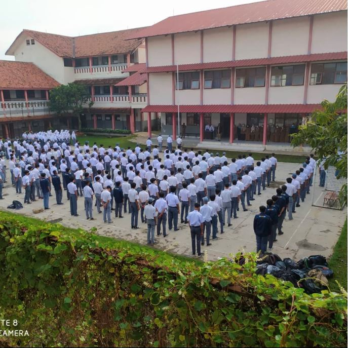

PINDAD SEBAGAI PERSEROAN
Pada Tahun 1980-an pemerintah Indonesia semakin gencar menggalakkan program alih teknologi, saat inilah muncul gagasan untuk mengubah status Pindad menjadi perusahaan berbentuk perseroan terbatas. Berdasarkan keputusan Presiden RI No.47 Tahun 1981, Badan Pengkajian Penerapan Teknologi (BPPT) yang sudah berdiri sejak tahun 1978, harus lebih memperhatikan proses transformasi teknologi yang ditetapkan pemerintah Indonesia itu, termasuk pengadaan mesin-mesin untuk kebutuhan Industri. Perubahan status Pindad dilatarbelakangi oleh keterbatasan ruang gerak Pindad sebagai sebuah industri karena terikat peraturan-peraturan dan ketergantungan ekonomi pada anggaran Dephankam sehingga tidak dapat mengembangkan kegiatan produksinya. Selain itu, Pindad pun dinilai membebani Dephankam karena biaya penelitian dan pengembangan serta investasi yang cukup besar. Karena itu Dephankam menyarankan pemisahan antara war making activities dan war support activities. Kegiatan Pindad memproduksi prasarana dan perlengkapan militer adalah bagian war support activities sehingga harus dipisahkan dari Dephankam dan menjadi perseroan terbatas yang sahamnya dimiliki oleh pemerintah Indonesia.Penandatanganan serah terima pengelolaan Perindustrian TNI-AD (Pindad) dari Kasad Jenderal (TNI) Rudini kepada Prof. Dr. B.J. Habibie tanggal 29 April 1983 Ketua BPPT saat itu Prof. DR. Ing. B.J. Habibie kemudian membentuk Tim Corporate Plan (Perencana Perusahaan) Pindad melalui Surat Keputusan BPPT No. SL/084/KA/BPPT/VI/1981. Tim Corporate Plan diketuai langsung oleh Habibie dan terdiri dari unsur BPPT dan Departemen Hankam. Sebagai sebuah perusahaan Pindad diharapkan dapat memproduksi peralatan militer yang dibutuhkan secara efisien dan menghasilkan produk-produk komersial berorientasi bisnis. Dan memiliki biaya serta anggaran sendiri untuk pengembangan, penelitian dan investasi serta mengembangkan profesionalisme industrinya.Berdasarkan hasil kajian dari Tim Corporate Plan diputuskan komposisi produksi Pindad adalah 20% produk militer dan 80% komersial atau non militer. Tugas pokok Pindad adalah menyediakan dan memproduksi produk-produk kebutuhan Dephankam seperti munisi ringan, munisi berat, dan peralatan militer lain untuk menghilangkan ketergantungan terhadap pihak lain. Tugas pokok kedua adalah memproduksi produk-produk komersial seperti mesin perkakas, produk tempa, air brake system, perkakas dan peralatan khusus pesanan. Pada 29 April 1983, Perindustrian Angkatan Darat resmi beralih status dari Institusi yang sebelumnya di bawah naungan Departemen Pertahanan dan Keamanan menjadi Perseroan Terbatas (PT), dengan nama baru sebagai PT. Pindad (Persero). Kata Pindad dibelakang kata PT bukan merupakan singkatan melainkan kedudukannya utuh sebagai sebuah nama. Selaku Direktur Utama, Menteri Keuangan menunjuk Prof. Dr. Ing. B.J Habibie. Tanggal 29 April 1983 ini diperingati sebagai hari ulang tahun Pindad sampai saat ini.